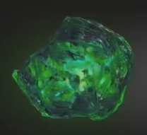

| Name |
Color |
Powers and capabilities |
Image |
| Soul |
Orange |
According to Wong's ancient texts, the Soul Stone could prove to be the greatest threat out of all the Infinity Stones.[18] Gamora knew of the location of the Soul Stone from a map she found to its whereabouts (which she burnt) but kept this a secret from Thanos. |

|
| Time |
Green |
The Eye of Agamotto is an ancient artifact, a pendant created by Agamotto, the first Sorcerer Supreme, presumably to contain and harness the power of the green Time Stone contained inside. |
 |
| Space |
Blue |
The Tesseract is named for its cube-like appearance and is capable of controlling space itself, providing the user instant access to any location throughout the universe if used correctly. |
 |
| Mind |
Yellow |
The Scepter was a weapon that utilized the yellow Mind Stone housed inside a blue computer module, which also masked the stone's presence. |
 |
| Reality |
Red |
The Aether appears as a dark, red, viscous liquid. It acts as a symbiotic force, capable of being absorbed into the body of a living host, giving the user the ability to warp reality at will, granting that person immense strength, durability, powers, and subjective influence over the universe. |
 |
| Power |
Purple |
The Power Stone is an incredible power source, it increases the user's physical abilities and allows it to manipulate energy, which, when used at full potential, has enough power to obliterate an entire planet when unleashed. |
 |